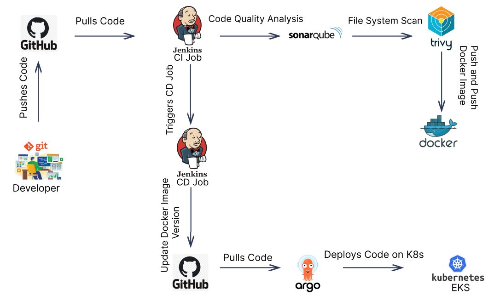

DevSecOps Platform for a Cloud-Native eCommerce System
I designed a fully automated CI/CD and GitOps pipeline using AWS, Kubernetes, and security-first engineering practices.
Overview
The Elcro Shop eCommerce platform was designed and deployed as a fully automated, cloud-native application leveraging a DevSecOps approach. The primary objective of this project was to eliminate manual intervention across infrastructure provisioning, application delivery, and deployment workflows—achieving a true “push-to-deploy” ecosystem with built-in security, scalability, and reliability. Rather than focusing solely on application delivery, this project emphasizes building a resilient, observable, and secure software delivery pipeline using modern cloud-native and GitOps principles.
The Problem
Traditional deployment processes were slow, error-prone, and inconsistent across environments. Manual interventions introduced configuration drift and delayed releases.
What We Built
We implemented a complete DevSecOps pipeline that integrates CI/CD automation, security scanning, infrastructure as code, and GitOps-based deployments.
Architecture
The system is built on AWS using Amazon EKS for container orchestration. Terraform is used to provision infrastructure, while Jenkins orchestrates the CI/CD pipeline.
ArgoCD ensures that the Kubernetes cluster always matches the desired state defined in Git.

CI Pipeline
Every code commit triggers a Jenkins pipeline that performs the following steps:
- Source code checkout from GitHub
- Static code analysis using SonarQube
- Vulnerability scanning using Trivy
- Docker image build
- Push image to container registry
CD + GitOps
Once the image is built, the deployment pipeline updates Kubernetes manifests and pushes them to a GitOps repository.
ArgoCD continuously monitors this repository and automatically synchronizes the changes with the EKS cluster.
Security (DevSecOps Approach)
Security is embedded directly into the pipeline rather than being treated as a separate phase.
SonarQube ensures code quality and detects vulnerabilities early, while Trivy scans container images and dependencies for known CVEs.
Security is not a gate at the end — it is part of every commit.
Infrastructure as Code
Terraform is used to define AWS infrastructure, ensuring that environments are reproducible, version-controlled, and consistent across all stages.
Containerization
Docker is used to package the application into lightweight, portable containers, ensuring consistency across development, staging, and production environments.
Key Outcomes
- Fully automated CI/CD pipeline
- GitOps-driven deployments using ArgoCD
- Shift-left security with integrated scanning
- Scalable Kubernetes architecture on AWS EKS
- Zero manual deployment dependency